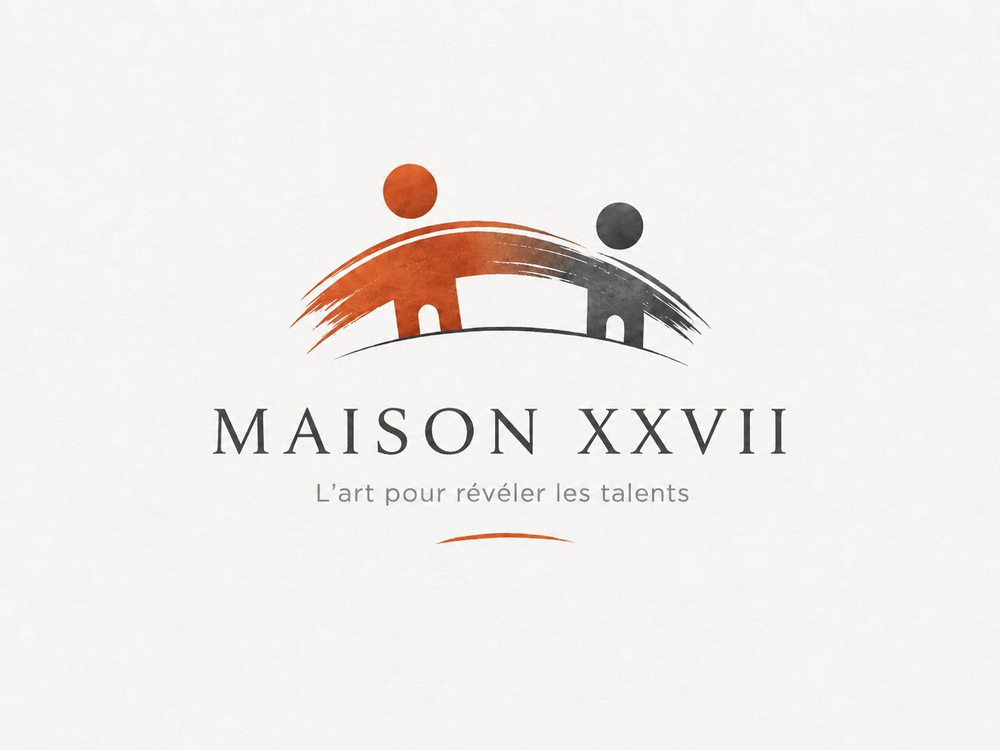

Maison XXVII
L'ancrage français de la vision XXVII
Maison XXVII est l'association française dédiée au déploiement territorial de la vision portée par la Fondation XXVII. Elle développe ses propres programmes artistiques, éducatifs et culturels afin de faire de l'art un outil concret de transmission, d'inclusion, d'ouverture interculturelle et de développement des compétences humaines essentielles au monde de demain.

Un laboratoire d'action en France
Maison XXVII développe des programmes propres autour de la transmission artistique, de l'accompagnement des jeunes talents, de l'inclusion par l'art, des rencontres intergénérationnelles, des expositions, des ateliers pédagogiques et des compétences humaines révélées par la création.
Elle agit comme un laboratoire français de la transmission par l'art, en expérimentant de nouveaux formats avec les artistes, les chercheurs, les éducateurs, les acteurs culturels, les entreprises, les mécènes et les institutions.